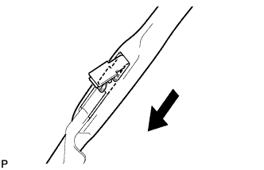
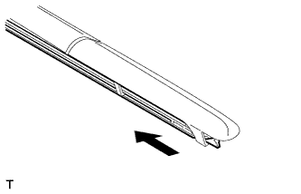
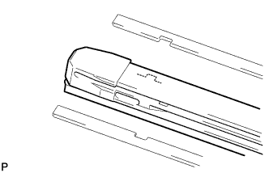

FRONT WIPER RUBBER > REMOVAL |
| 1. REMOVE FRONT WIPER BLADE LH |
 |
Remove the wiper blade holder.
Remove the wiper blade as shown in the illustration.
| 2. REMOVE WIPER RUBBER LH |
Detach the head part (large side) of the wiper rubber from the wiper blade.
 |
Remove the wiper rubber in the direction indicated by the arrow in the illustration.
 |
Remove the 2 wiper rubber backing plates from the wiper rubber.